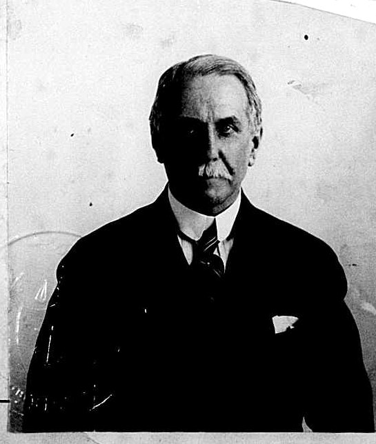
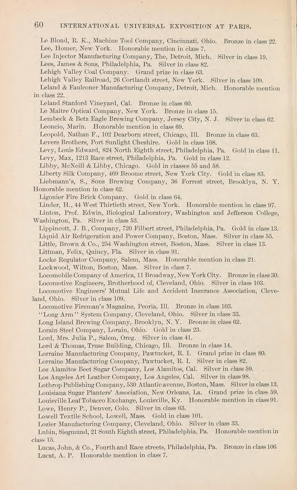
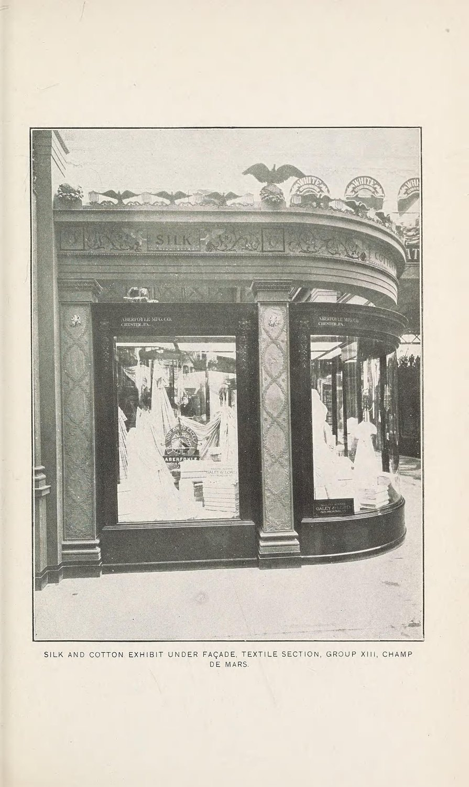

<meta charset="utf-8">
<meta name="viewport" content="width=device-width, initial-scale=1">
<meta name="robots" content="noindex">
<title>The MacColl Family</title>
<link rel="stylesheet" href="style.css">

<nav>
  <a class="here" href="index.html">The MacColl Family</a>
  <a href="#tree">Family tree</a>
  <a href="#proof">What's proved</a>
  <a href="#archive">The archive</a>
</nav>

<main>
<h1>The MacColl Family</h1>
<p class="sub">A farm on a Scottish island, a tailor's shop in Glasgow, and a cotton mill in Rhode Island. Two hundred and fifty years, told plainly.</p>

<p>This is the story of one family across eight generations, and it is unusually well documented for a reason: somebody in it started keeping paper and never stopped. Fifty feet of letters, certificates, photographs and hand-drawn family trees, running from 1811 to 1974, now sits in a public archive in Fort William, Scotland. On top of that, Scotland has kept birth, marriage and death registers since the 1500s, and America kept censuses, passports and army records. Between them you can follow this family from a farmhouse on the Isle of Mull in the 1770s to a house on the east side of Providence in the 1930s.</p>

<p>Here it is, oldest first. There is a family tree at the end, and a short honest section on which bits are proved and which bits aren't.</p>

<h2>Where it starts: an island, in the 1700s</h2>

<p>The oldest people we can name are <strong>John MacColl</strong>, a farmer on the <strong>Isle of Mull</strong>, off the west coast of Scotland, and his wife <strong>Mary Campbell</strong>. We know them because the local church wrote down their children's baptisms. The parish was called Kilninian and Kilmore, up near the port town of Tobermory, and its register names four children born to the couple:</p>

<ul class="docs">
  <li><strong>Mary</strong> &mdash; baptised 19 March 1769</li>
  <li><strong>Duncan</strong> &mdash; 23 November 1774</li>
  <li><strong>Hugh</strong> &mdash; 3 July 1777 <span class="badge proven">the line runs here</span></li>
  <li><strong>Janet</strong> &mdash; 13 July 1781</li>
</ul>

<p>That's the end of the road going backwards, and it's worth saying why. That church register only begins in 1766, so anything earlier simply wasn't written down. Mull also kept no burial records at all before 1855. And we searched every marriage register in the county for John and Mary's own wedding and it isn't there. So John and Mary are where this family goes dark. Everything below them is on paper.</p>

<figure>
  
  <figcaption>The family's own memory of itself: the "MacColls of Mull" tree, drawn by James Roberton MacColl &mdash; the mill owner, four generations down. At the top are John MacColl and Mary Campbell. Halfway down: "(3) Hugh m. Agnes Currie, born 1777." For years this sheet of paper was the only evidence for the oldest generations. The church register now backs it up. Lochaber Archive Centre, GB3218 L/D73.</figcaption>
</figure>

<p><strong>Who were the MacColls?</strong> A small Highland clan from Appin, on the mainland just across the water from Mull. They were the fighting men for a bigger family, the Stewarts of Appin, and it cost them. When the Appin men fought for Bonnie Prince Charlie at <strong>Culloden in 1746</strong>, the regiment took 157 casualties &mdash; and thirty-three of them were MacColls. Eighteen killed, fifteen wounded. Among the ordinary soldiers that was close to a third of all the losses, more than twice any other surname in the regiment. That was thirty years before Hugh was born.</p>

<p><strong>And then the island emptied.</strong> John MacColl was farming Mull in the 1770s, in a Gaelic-speaking place that lived off cattle &mdash; you raised them, then walked them south in the autumn to sell. That whole way of life was already coming apart. Landlords were breaking up the old shared farms and pushing rents up, and over the next hundred years they cleared people off the land to make room for sheep. Mull lost roughly four-fifths of its population. Tobermory turned into a town people sailed away from.</p>

<p>You can see it happen inside this one family. Within two generations there were no MacColls left on Mull. Some went to Canada, to a Gaelic-speaking town in Ontario the family tree calls "Finch, near Montreal." Some went to Australia, where charities shipped Highlanders out by the thousand because they were good with livestock. And one of them &mdash; Hugh, born in 1777 &mdash; took the short road instead.</p>

<h2>Off the island: Glasgow</h2>

<p><strong>Hugh MacColl went to Glasgow and became a tailor.</strong> That was one of the few trades a Highlander arriving in the city could actually get into. He married <strong>Agnes Currie</strong> in Glasgow on <strong>1 November 1802</strong>, and they had <strong>nine children</strong> &mdash; a fact nobody in the family knew until this year:</p>

<ul class="docs">
  <li>Alexander (1805) &middot; John (1807) &middot; Mary (1808) &middot; Daniel (1810) &middot; Agnes (1811)</li>
  <li><strong>Hugh</strong> (8 May 1813) <span class="badge proven">the line runs here</span></li>
  <li>Charles (1815) &middot; a second Agnes (1820) &middot; Duncan (1822)</li>
</ul>

<p>Look at the two Agneses. In those days you only reused a child's name if the first one had died. That single repeat is the whole infant-mortality story of the period in one line of a register.</p>

<p>Hugh senior lived at <strong>3 Germiston Street</strong>, on the north side of the river out past the chemical works at St Rollox &mdash; not a nice part of town. He died there in <strong>1852, aged 74</strong>. His wife had died eight years before him, in 1844, aged 64. The family's own papers carry both deaths, and take her Currie relations back one more step, to an Alexander Currie who died in 1806.</p>

<h2>The tailor's son marries the foundry owner's daughter</h2>

<p>Their sixth child, <strong>another Hugh MacColl (1813&ndash;1882)</strong>, was a tailor too &mdash; and this is where the family stops being poor.</p>

<p>On <strong>13 September 1849</strong> he married <strong>Janet Roberton</strong>. Her father, <strong>James Roberton</strong>, ran the Gorbals Iron Foundry, employing fifty-two men, and a Glasgow history of 1894 calls him "the much-esteemed Bailie Roberton" &mdash; a bailie being a city magistrate, a local bigwig. So a tailor married a rich man's daughter, and it stuck.</p>

<figure>
  
  <figcaption>The marriage, 13 September 1849. It was written into both of their parish registers, which was normal then &mdash; once where the bride lived, once where the groom did. This is the Gorbals copy, and it calls him "Hugh MacColl Junr." to tell him apart from his father.</figcaption>
</figure>

<p><strong>"Tailor" undersells him.</strong> The Scottish censuses show what the house was actually like. In 1861 they were at 38 South Apsley Place with four small children and <strong>two live-in servants</strong>. By 1871 they had moved up to a house with a name &mdash; <strong>Auburn Cottage</strong>, on St Andrews Road &mdash; three more children, and a servant. He wasn't a man working for a tailor. He ran the shop.</p>

<p>By the 1881 census two things have changed. They're at 10 Kenmure Street, five grown children still at home, and <strong>Janet is gone</strong>. She had died on <strong>27 December 1871</strong>, four days after Christmas. Hugh was a widower for eleven years and died on <strong>12 December 1882</strong>, aged sixty-nine.</p>

<p>One thing is recorded about the kind of man he was, written down by one of his sons: he was a <strong>Presbyterian elder and a Sunday school teacher for over fifty years</strong>.</p>

<h2>Janet's people: printers and iron</h2>

<p>Janet brought her own three generations into the family, and they're all on paper too. Her father the iron founder was born at <strong>Balfron in Stirlingshire on 4 May 1794</strong>. <em>His</em> father was <strong>John Roberton, a printer</strong>, who married <strong>Catharine Roberton</strong> &mdash; same surname, no known relation &mdash; at Bonhill in 1789. Catharine was baptised in <strong>April 1760</strong> at Carmunnock, daughter of James Roberton and Margaret McFarlane. That's this family's furthest-back proven ancestor of all.</p>

<p>One detail there is worth stopping on. The marriage record describes John Roberton as a printer <strong>"at Levenbank"</strong> &mdash; and Levenbank is in the Vale of Leven, which in the 1790s was the centre of Scotland's <strong>calico printing</strong> trade. He printed patterns onto cloth, not words onto paper.</p>

<p>Which means this family was already in textiles two generations before anyone crossed the Atlantic. Cloth printer, then iron founder, then tailor, then a cotton mill in America. It wasn't a leap. It was a family business drifting downstream for a century.</p>

<h2>The boy behind the counter</h2>

<p><strong>James Roberton MacColl</strong> was born in Tradeston, Glasgow, in <strong>1856</strong>. (The registrar misheard his mother's surname and wrote him down as "James Robert<em>s</em>on McColl." He spent the rest of his life spelling it her way.)</p>

<p>He went to Anderson Academy, <strong>Glasgow High School</strong> and the Glasgow Technical College &mdash; now the University of Strathclyde. But the 1871 census, taken when he was fifteen, already gives his job: <strong>drapery clerk</strong>. He was measuring cloth over a counter as a teenager. And that census was taken in the same year his mother died.</p>

<p>He was fast. By <strong>twenty-two</strong> he had his own firm, in partnership with a John Thomson. On a business trip to America in 1881 he met two brothers, <strong>W. F. and F. C. Sayles</strong>, who were building a cotton mill in Pawtucket, Rhode Island called the <strong>Lorraine Manufacturing Company</strong>. They offered him the job of running it. In <strong>February 1882</strong> he sailed from Glasgow on the <strong>S.S. Ethiopia</strong> and never lived in Scotland again. He was twenty-five.</p>

<p><strong>Why would anyone hand a mill to a twenty-five-year-old?</strong> That looked like a family legend until we found the answer in print. A 1908 profile of Frederic Sayles explains his method: at the Lorraine and at his dye works, "the very best skilled foremen for each department were engaged from abroad by him <em>before any movement was made to build the works</em>." The Sayles brothers bought their European expertise first and put the building up around it. James wasn't lucky. He was equipment.</p>

<figure>
  
  
  <figcaption>The crossing and the man. Left: the Anchor Line's <strong>S.S. Ethiopia</strong> docking in New York on 23 February 1882, with "J Mccoll" on the list. Right: James at sixty-four. We only have this face because his wife needed a passport &mdash; the photograph is pinned to the application Agnes filled in to travel to Europe with him in 1920.</figcaption>
</figure>

<h2>Rhode Island, and forty-nine years at one mill</h2>

<p>He ran the Lorraine Mills for <strong>forty-nine years</strong>: first as the Sayles' agent, then from 1896 as a big shareholder and the company's treasurer, and from 1920 as its president. At its height the mill ran about <strong>2,000 workers and 2,750 looms</strong>. He became an American citizen in Providence on <strong>17 December 1895</strong>.</p>

<p>He collected the sort of jobs a successful mill man collected: vice-president and director of the <strong>Industrial Trust Company</strong>, then the biggest bank in Rhode Island; president of Ponemah Mills in Connecticut, of the Morris Plan Company, and of a small railroad. Twice he was president of the region's cotton manufacturers' association, and on his watch it went national. When the Pawtucket textile millionaire Frank Sayles died in 1920, James was named executor of his will.</p>

<h2>Paris, 1900</h2>

<p>The family has always said the mill won a prize at the Paris world's fair. It's true, and here is the proof &mdash; the United States government's own list of awards, where two consecutive lines read:</p>

<blockquote>
<p>"Lorraine Manufacturing Company, Pawtucket, R. I. <strong>Grand prize in class 80.</strong>"</p>
<p>"Lorraine Manufacturing Company, Pawtucket, R. I. <strong>Silver in class 82.</strong>"</p>
</blockquote>

<figure>
  
  
  <figcaption>Left: the award list, page 60 of the official United States report on the Paris Exposition of 1900. Right: the American cotton and silk hall on the Champ de Mars, where Lorraine's cloth was shown. Both from the same government report, and both public domain.</figcaption>
</figure>

<p>In plain terms: <strong>class 80 was cotton cloth, and a grand prize was the top award.</strong> Class 82 was worsteds &mdash; fine wool &mdash; and the silver medal there is brand new information; nobody in the family knew about it at all. The catalogue says what they sent: <em>fine cotton fabrics in woven colors</em>. Three American grand prizes were handed out in cotton that year and the other two were for plain white goods, so Lorraine's was the only American top prize for fine coloured cloth. The judge who assessed wool went out of his way to name the mill, saying they "deserve special praise" for goods "of a higher order than is generally made in the United States." The exhibit cost the company $1,600 to put up.</p>

<h2>What he actually sounded like</h2>

<p>He left more of his own voice on the record than anyone else in this story, and he was not a smooth man.</p>

<p>In <strong>1919</strong> he opened the World Cotton Conference in New Orleans. On traders speculating in cotton: <em>"Any system of cotton exchange trading which&hellip; places the cotton industry at the mercy of gamblers should be eliminated."</em> On the industry's own sloppiness in how it packed cotton: <em>"A decent American bale is certainly one of the crying needs of the industry. No one has the hardihood to defend the present bale."</em> And when a floor debate wore him out: <em>"Any woolen man knows that is perfectly absurd."</em></p>

<p>Thirteen years earlier he had aimed the same bluntness at his own side. Addressing the American cotton manufacturers as their president: <em>"In many of our factories quality is sacrificed to quantity and cheapness, and designing consists in clever copying of foreign samples."</em> Put that next to the Paris grand prize and you have a man saying, out loud, exactly what he thought he'd been imported to fix.</p>

<p>Two other moments survive, and they don't sit comfortably together.</p>

<p>At a convention in September 1906, in the middle of a dry technical argument about steam engines, a speaker gave up halfway through a comic poem written in broad Scots &mdash; "a dialect which I do not feel familiar enough with to do justice" &mdash; and handed it over. MacColl said he'd "be very glad to make the effort" and read all five verses of <em>The Receeprocatin' Mon</em> out loud. Twenty-four years in Rhode Island and they still turned to him for the accent.</p>

<p>At the same meeting, introducing a talk on child labour, he said: <strong>"We cannot operate our factories without child labor and every restrictive law tends to make it more difficult."</strong> It's printed in the book's index under his name. He thought the minimum working age should rise &mdash; but by the industry choosing to, not by law making it. It is the clearest statement of his politics that survives, and it belongs on the page next to the poem.</p>

<p>He died at home at <strong>260 Waterman Street, Providence, early on 23 November 1931</strong>, aged seventy-five. The obituary went out on the national wire and ran in Boston, Philadelphia, Atlanta, Chattanooga, Springfield, New Bedford, Vermont and North Carolina. Five months before he died, the <em>Glasgow Herald</em> printed his old school's prize list, and in it are a "<strong>James R. MacColl essay prize</strong>" and a "James R. MacColl essay competition." The paper doesn't say who paid for them. It doesn't really need to.</p>

<h2>Agnes</h2>

<p>In April 1884 he married <strong>Agnes Bogle</strong> in Glasgow, and she came out to Rhode Island that same year.</p>

<p>She was born in <strong>Tradeston on 15 September 1859</strong> &mdash; three years after James, in the same district of the same city. Her parents were <strong>William Bogle and Margaret Yuill</strong>, who married in <strong>July 1845</strong>. Their wedding was recorded in two places: in the Gorbals, where they lived, and at <strong>East Kilbride</strong>, a town outside Glasgow. That second entry is the first clue anyone has ever had about where her family originally came from. Her brothers' birth records track the family moving across the city year by year &mdash; John in Tradeston in 1856, Andrew in Govan in 1862, David Robert in Govan in 1865.</p>

<p>James and Agnes had six children in Rhode Island: <strong>Hugh</strong> (1885), <strong>William</strong> (1887), <strong>Margaret</strong> (1888), <strong>James</strong> (1891), <strong>Norman</strong> (1895) and <strong>Kenneth</strong> (1898). Margaret died the day after Christmas 1893, aged five.</p>

<p><strong>Almost nothing survives of Agnes herself.</strong> No letter, no diary, and no obituary anyone has managed to find. What we have is a government form. In April 1920 she applied for a passport to go to Europe with her husband, and the form demanded a physical description. She was <strong>sixty</strong>: five feet five, medium forehead, <strong>grey eyes</strong>, brown hair, an oval face, no distinguishing marks. James, described on the facing page, was five feet five and a half with blue eyes and light brown hair going grey. They were the same height to within half an inch.</p>

<p>Her identity was sworn to by <strong>Arthur L. Brown, a United States District Judge</strong>, who said he'd known her personally for fifteen years. A federal judge vouching for a girl from Tradeston is its own quiet measure of the distance travelled. She signed it in a firm hand: <em>Agnes Bogle MacColl</em>. She outlived James by six years, dying in Providence on <strong>29 November 1937</strong>. They're buried together at Swan Point.</p>

<figure>
  
  <figcaption>Agnes's 1920 passport application. Her sworn statement is the record that pins down two of the family's key dates: that her husband "emigrated to the United States, sailing on board the S.S. Ethiopia from Glasgow on or about Feby 17th 1882," and that he was naturalized at Providence on 17 December 1895.</figcaption>
</figure>

<figure>
  
  
  
  
  <figcaption>The family photographs from the archive box. The studio portrait was taken in Pawtucket and is the same face as the passport above &mdash; James. So is the older man outside the Providence house holding a grandchild. The seated woman is very likely Agnes. The young man in the light suit was photographed in Cambridge, Massachusetts &mdash; one of the sons at college, and a Cambridge address points to Hugh at Harvard. Not everyone in these has been identified.</figcaption>
</figure>

<figure>
  
  
  <figcaption>Two more, badly faded: a baby in a pram, and two small children you can only just make out.</figcaption>
</figure>

<h2>His brothers and sisters: two ministers and a mill man</h2>

<p>James was one of five children of the Glasgow tailor, and the set is now complete &mdash; it matches, exactly, the line in his 1931 obituary saying he left "two sisters and two brothers."</p>

<p>The sisters were <strong>Jessie</strong>, born August 1850 (eleven months after the wedding), and <strong>Agnes</strong>, born June 1852. Both brothers became ministers.</p>

<p><strong>The Rev. John McColl</strong> was born in Glasgow on <strong>30 September 1863</strong>. Same school as James, then a Glasgow University degree at eighteen. From 1886 to 1910 he was the first minister of Lylesland church in <strong>Paisley</strong>, then spent ten years in <strong>Queenstown, South Africa</strong>, then country parishes in Aberdeenshire. He died in 1944. For years the family only knew there was "a brother who was a minister in Paisley"; two separate records now name him, and both give his parents as Hugh MacColl and Janet Roberton.</p>

<p><strong>The Rev. Alexander MacColl</strong>, born in Glasgow on <strong>27 December 1866</strong>, went to America and spent most of his career as pastor of the <strong>Second Presbyterian Church in Philadelphia</strong>. He was nominated in 1919 for Moderator of the General Assembly &mdash; the top job in American Presbyterianism.</p>

<p>He was also, by the standards of his church, a liberal, and he took some hits for it. In <strong>1934</strong> his name headed a list of eleven Philadelphia ministers accused of heresy for signing a document defending modern scholarship. He kept his pulpit for another fifteen years anyway.</p>

<p>Philadelphia's evening paper covered him closely enough that you can hear him. In <strong>March 1915</strong>, when the celebrity revivalist <strong>Billy Sunday</strong> was packing a temporary tabernacle in the city and most of the clergy were queuing up to endorse him, MacColl publicly refused &mdash; objecting to the "breaches of Christian courtesy" in the campaign and to behaviour "against the spirit of Christ." Preaching to a graduating class at Lafayette College in <strong>1916</strong>, with the war on in Europe and America still out of it, he warned them that "all the fundamental causes of the horror abroad are here in embryo in our American life." In <strong>1920</strong> he introduced the Governor and the Mayor from the stage of the Academy of Music &mdash; and served as honorary vice-chairman of a committee raising relief for <em>German</em> children, two years after the armistice. His daughter <strong>Ailsa</strong> sailed for Scotland in 1917 to nurse the wounded.</p>

<p>He lived at 2108 Delancey Street, four doors from a judge's house that anarchists bombed on the last day of 1918. He died in 1953, aged eighty-six, and is buried at <strong>Laurel Hill West</strong> outside Philadelphia in a single plot with his wife <strong>Grant Stuart Hally Craig MacColl</strong> (1865&ndash;1959) and their daughter <strong>Ailsa</strong>, who married a Pender and died in 1978.</p>

<h2>The five sons</h2>

<p>James and Agnes's five surviving sons stayed close to home and mostly stayed in cloth.</p>

<p><strong>Hugh Frederick MacColl</strong> (born 1885) is the one the family has always undersold. The story was that he "went to Harvard and became a composer," and it turns out to be true twice over. He studied violin, piano and organ as a boy, went to <strong>St. Paul's School</strong> in New Hampshire, and read music at <strong>Harvard</strong>, graduating <em>magna cum laude</em> in 1907. He wrote <strong>sixteen works</strong> between 1927 and 1945 &mdash; four orchestral, five choral, seven chamber. The Providence Symphony premiered him in 1932 and again in 1935; his music went out on New York radio. He was a trustee of the New England Conservatory and, for twenty-five years, accompanist of the University Glee Club of Providence.</p>

<p>And the whole time he was an investment banker &mdash; senior partner of MacColl, Fraser &amp; Wheeler of Providence. He was both things at once for forty years. He married Margery MacKillop in 1915 and they had three daughters, one of whom they named <strong>Janet Roberton MacColl</strong> &mdash; carrying a Glasgow foundry family's surname forward as a Rhode Island girl's first name in 1921.</p>

<p>Two things of his outlasted him. Brown University holds the <strong>Hugh F. MacColl Papers</strong>, about nine linear feet of manuscripts, scores and scrapbooks. And in 1954, out of money he left, Harvard founded the <strong>Hugh F. MacColl Prize</strong> for original composition by undergraduates. <strong>It is still awarded every year.</strong> A Gorbals tailor's great-grandson is still paying for music at Harvard seventy years after his death.</p>

<p><strong>William</strong> (d. 1941) and <strong>Kenneth</strong> (1898&ndash;1971) both married daughters of Alfred M. Coats, who ran the vast <strong>J. &amp; P. Coats</strong> thread works across town in Pawtucket &mdash; so the MacColls married straight into the thread empire, twice. William became treasurer of Lorraine; Kenneth became vice-president of Coats.</p>

<p><strong>James junior</strong> (1891&ndash;1963) married <strong>Louise Kimbark</strong> in 1917. His Princeton classmates called him <strong>Bob</strong>, and their reunion book puts his wedding and his war in a single sentence: "In 1917 &mdash; the same year he hied himself to war on the decks of the <strong>U.S.S. Ontario</strong> &mdash; Bob married Louise Kimbark." So while his brother Norman was driving ambulances in France, he was at sea. He later left the family mill for a New York firm. His son <strong>E. Kimbark MacColl</strong> became a well-known historian of Portland, Oregon.</p>

<p>And note what happened next: seven years after James junior married Louise Kimbark, his brother Norman married her sister Mary. <strong>Two brothers married two sisters.</strong></p>

<h2>Norman goes to war</h2>

<p><strong>Norman Alexander MacColl</strong> was born on 28 July 1895. He went to <strong>St. Paul's School</strong> from 1908 to 1911, then Worcester Academy, then <strong>Yale</strong>, where he was studying engineering and playing <strong>first violin in the university orchestra</strong>.</p>

<p>Then, six weeks after America entered the First World War, he walked out.</p>

<p>On <strong>18 May 1917</strong> he swore a passport application in Providence. He was twenty-one. Where the form asks his occupation he wrote <strong>"student at Yale."</strong> Where it asks what country and why, he wrote <strong>France</strong>, and <strong>ambulance service</strong>. He sailed from New York eight days later &mdash; as a volunteer, months before there was any American army to send him.</p>

<p>Three weeks after he'd gone, the draft registration caught up with the family in Providence. His brother William had to sign the card for him, because Norman was already in France.</p>

<figure>
  
  <figcaption>Norman's draft card, Providence, June 1917. Occupation: "Ambulance Corps in France." Signed "Norman A. MacColl <strong>by Wm. B. MacColl</strong>" &mdash; his brother signing on his behalf, because he had already sailed.</figcaption>
</figure>

<p>He went over with the Yale Ambulance Unit. In <strong>September 1917</strong> the volunteers were absorbed into the United States Army, and he was sworn in as a private on 24 September. His unit had two names for the same thing &mdash; Section 4 as volunteers, <strong>Section 627</strong> as soldiers.</p>

<p><strong>Then came 18 July 1918.</strong> His section was attached to the <strong>1st French Infantry Division</strong> in the Forest of Villers-Cotterêts, north-east of Paris. That morning the division attacked out of the forest in the first wave, behind tanks. This was General Mangin's surprise counter-attack &mdash; the blow that stopped the German advance on Paris and turned the war. The ambulances followed the infantry forward for six days, to a village called le Plessier-Huleu, taken on 23 July. The unit's own published history describes it:</p>

<blockquote>
<p>"The hottest spot was le Plessier-Huleu. There many of the men had to drive through almost a barrage to get to the poste."</p>
</blockquote>

<p>For that week Norman was given the <strong>French Croix de Guerre with bronze star</strong>. He was twenty-two.</p>

<figure>
  
  <figcaption>The army's award card: "MacColl, Norman A. &mdash; 9,700, Pvt. 1cl., Section No. 4/627 Amb. Service. French Croix de Guerre with bronze star, under Order No. 12.000 'D', dated Nov. 29, 1918, <strong>for act of July 18&ndash;24, 1918</strong>, (place not shown)." United States National Archives, WWI Army Award Cards, Box 098b.</figcaption>
</figure>

<p>Twenty years later his Yale class published a follow-up book and Norman summed the whole thing up in about four lines. He listed where he'd been: <strong>Verdun, Compiègne, Villers-Cotterêts, l'Assigny and Alsace.</strong> That is the only account of his war in his own words that survives, and that's all of it.</p>

<p>He came home on the <strong>USS Pueblo on 16 March 1919</strong>, with his father listed as his next of kin.</p>

<p><strong>And Yale gave him the degree he hadn't finished.</strong> The university had ruled that a student who left to join the army and could "present a meritorious service record" could receive his degree in place of the missing year of study. Norman was a private and never became an officer &mdash; so what he submitted was the Croix de Guerre. Yale's official register lists him among the Bachelors of Philosophy, <em>honoris causa</em>, class of 1918. They took his war instead of his senior year.</p>

<p class="usnote">One caution, because it matters: the unit history quoted above is the <em>section's</em> account, not Norman's. He isn't named in it &mdash; he joined that section from the Yale unit rather than from the volunteer organisation whose men the book lists. It is his unit, his week, and the action his medal names. But it is not his own account, and nothing on this page puts words in his mouth.</p>

<h2>Norman's long life</h2>

<p>In June <strong>1924</strong>, at St Luke's Church in Evanston, Illinois, Norman married <strong>Mary Kimbark</strong> (1903&ndash;1969), from a well-known Chicago family &mdash; the one Kimbark Avenue in Hyde Park is named for. She was married the day after her twenty-first birthday. His uncle, the Rev. Alexander MacColl, came from Philadelphia to help conduct the service; his brother James was best man.</p>

<p>They had five children: <strong>Louise</strong> (1925), <strong>Nancy</strong> (1926), <strong>Joan</strong> (1930), <strong>Norman junior</strong> (1934) and <strong>Hugh Frederick the second</strong> (1937), named for his uncle the composer.</p>

<p>Norman went into the family firm and, in the end, closed it. By 1943 he was <strong>president of Lorraine</strong>. In October 1944 he sold off the cotton-and-rayon plant and kept the wool side going. In July 1953 &mdash; the week after Joan's wedding &mdash; he announced that Lorraine was taking no more orders and would run out its stock. The New England textile trade was moving south and that was that. His father took the mill on in 1882; Norman shut it in 1953, seventy-one years later.</p>

<p>Away from work he sailed. He raced a boat called <em>Halcyon</em>, won his class series in 1933, and in 1949 was elected <strong>commodore of the Wianno Yacht Club</strong> on Cape Cod &mdash; where this family summered for three generations. He and Mary also collected American pressed glass, seriously enough that in <strong>1961 they gave the Bennington Museum in Vermont 1,242 goblets</strong>, one of every pattern they could find. The museum was still displaying it as "the Norman A. MacColl collection" twenty years later.</p>

<p>He stayed loyal to the university he'd walked out of, too: he sat on the executive committee of the Yale Association of Rhode Island and <strong>chaired its scholarship committee</strong> &mdash; a man with no earned degree of his own, raising money to send other Rhode Island boys to New Haven.</p>

<p>One thing goes on the record plainly because it is on the record. In November <strong>1945</strong> he was one of fifteen Rhode Island company heads who signed a petition to Congress opposing a slate of post-war bills &mdash; national health insurance, federal aid to schools, unemployment compensation, and making the wartime fair-employment commission permanent &mdash; calling them "the trend toward national socialism." He was a Republican mill owner of his time and place, and he put his name to it.</p>

<p>Mary died in <strong>March 1969</strong>. Within about a year Norman married again, at seventy-four, to <strong>Dorothy Arnold Harris</strong> &mdash; "Dot" &mdash; a Rhode Islander born in Providence in 1898, and moved down the bay to Saunderstown. He died there on <strong>15 October 1988</strong>, aged ninety-three. Dorothy outlived him by less than five months. They aren't buried together: she lies at the North Burial Ground, and he lies at <strong>Swan Point</strong> with Mary, his parents, and the sister who died at five.</p>

<h2>Joan</h2>

<p><strong>Joan MacColl</strong> was born in Providence on <strong>10 March 1930</strong>, the middle of Norman and Mary's five.</p>

<p>On <strong>27 June 1953</strong> she married <strong>Donald White Flynn Jr.</strong>, who had been born on 9 March 1930 &mdash; <strong>one day before her</strong>. He died on 7 January 1973, aged forty-two, and she was widowed at forty-two herself. She later married a Brennan and was living in Needham, Massachusetts by the 1990s. Her son John Matthew died in 1993, aged thirty-one.</p>

<p>Joan died on <strong>20 June 2013</strong>, aged eighty-three. She lies at Glenwood Cemetery in East Greenwich, Rhode Island, with her first husband and her son &mdash; three graves in one plot. The stone carries every name she carried: <em>Joan MacColl Flynn Brennan.</em></p>

<p>And here is the honest thing. We can prove more about a tailor who died in Glasgow in 1852 than we can tell you about Joan. We have her dates, her marriage, her graves. We do not have what she was like. <strong>That gap doesn't close in an archive &mdash; it closes by asking the people who knew her, while they're here to ask.</strong></p>

<h2 id="proof">What's proved, and what isn't</h2>

<p>Family history goes wrong when nobody says which bits are solid. So:</p>

<p><span class="badge proven">Proved</span> <strong>Everything from 1802 down.</strong> Hugh and Agnes Currie's marriage, their nine children, their son Hugh's birth and death, his marriage to Janet Roberton, James's birth, Agnes Bogle's birth, her parents' marriage, and every generation after that in America. All of it sits in official registers, each record naming the generation above it. Hugh junior is confirmed twice over independently &mdash; his baptism names his parents, and his death record gives his age as sixty-nine with his mother's maiden name. Born 1813, died 1882 at sixty-nine. The arithmetic closes.</p>

<p><span class="badge proven">Proved</span> <strong>The Mull family.</strong> John MacColl and Mary Campbell existed, farmed in Kilninian parish, and had four children there between 1769 and 1781, including a Hugh in July 1777. That's in the official index, with both parents named.</p>

<p><span class="badge probable">Probable</span> <strong>The join between them.</strong> That the Hugh baptised on Mull in 1777 is the same Hugh who married in Glasgow in 1802 is the one link in this whole chain that isn't nailed down. Everything fits &mdash; the name, the age at death, the trade, the well-trodden route from the Highlands into Glasgow tailoring &mdash; and there is no rival candidate in that parish. But no single document yet says it outright.</p>

<p>There is one document that could. The <strong>1851 census</strong> was the first Scottish census to record where each person was born, and Hugh died twelve months after it was taken. His entry is sitting in the archive, unread. It is the last piece of paper on earth that could say, in his own household's words, that he came off that island.</p>

<h2 id="tree">The family tree</h2>
<p>From a farmhouse on Mull down to Norman and Mary, and the four branches under them.</p>

<div class="familytree">
  <div class="node"><span class="role">The Isle of Mull, 1700s</span><span class="nm">John MacColl &amp; Mary Campbell</span> <span class="yr">farmers, Kilninian parish · four children on the register, 1769-1781</span></div>
  <div class="connector"></div>
  <div class="node"><span class="role">Glasgow, married 1 November 1802</span><span class="nm">Hugh MacColl &amp; Agnes Currie</span> <span class="yr">tailor, born on Mull 1777, died 1852 · nine children baptised in Glasgow</span></div>
  <div class="connector"></div>
  <div class="node"><span class="role">Glasgow, married 13 September 1849</span><span class="nm">Hugh MacColl &amp; Janet Roberton</span> <span class="yr">tailor (1813-1882) · Janet of the foundry Robertons · two ministers and a mill man among their sons</span></div>
  <div class="connector"></div>
  <div class="node"><span class="role">To Rhode Island, 1882</span><span class="nm">James Roberton MacColl &amp; Agnes Bogle</span> <span class="yr">1856-1931 &amp; 1859-1937 · the Lorraine Mills · five sons and a daughter</span></div>
  <div class="connector"></div>
  <div class="node apex"><span class="role">Great-grandparents</span><span class="nm">Norman Alexander MacColl &amp; Mary Kimbark</span> <span class="yr">1895-1988 &amp; 1903-1969 · married 1924, Evanston, Illinois · Norman, Croix de Guerre 1918</span></div>
  <div class="connector"></div>
  <p class="tline">Their children, the four branches:</p>
  <div class="children">
    <div class="node"><span class="nm">Bellows</span><span class="pl">Louise MacColl, 1925&ndash;2012</span></div>
    <div class="node"><span class="nm">Beckwith</span><span class="pl">Nancy MacColl, 1926&ndash;2018</span></div>
    <div class="node"><span class="nm">Flynn</span><span class="pl">Joan MacColl, 10 Mar 1930 &ndash; 20 Jun 2013</span></div>
    <div class="node"><span class="nm">MacColl</span><span class="pl">Alex, 1934&ndash;2011, and his brother Hugh</span></div>
  </div>
  <p class="tline" style="margin-top:12px">Corrections and additions always welcome.</p>
</div>

<p>Janet Roberton, who married into the line in 1849, brings her own three generations with her &mdash; and they reach back further than the MacColls do:</p>

<div class="familytree">
  <div class="node"><span class="role">Carmunnock, Lanarkshire</span><span class="nm">James Roberton &amp; Margaret McFarlane</span> <span class="yr">their daughter Catharine baptised April 1760</span></div>
  <div class="connector"></div>
  <div class="node"><span class="role">Bonhill, married 25 April 1789</span><span class="nm">John Roberton &amp; Catharine Roberton</span> <span class="yr">John a calico printer, "at Levenbank" in the Vale of Leven</span></div>
  <div class="connector"></div>
  <div class="node"><span class="role">Balfron, born 4 May 1794</span><span class="nm">James Roberton</span> <span class="yr">the Gorbals iron founder · died Pollokshields, 19 November 1868</span></div>
  <div class="connector"></div>
  <div class="node"><span class="role">Married Hugh MacColl, 1849</span><span class="nm">Janet Roberton</span> <span class="yr">died 27 December 1871 · wrote the account of her father's death below</span></div>
</div>

<h2>In their own hand</h2>
<p>The archive box also held handwriting: Hugh's letters to Janet while he was courting her in the 1840s, a letter to Janet from her mother in Dunoon, and Janet's own account of the night her father died in 1868.</p>

<figure>
  
  
  
  <figcaption>Left to right: one of Hugh's courtship letters, the first page of Janet's "Recollections of my beloved father," and the 1851 letter to Janet from her mother in Dunoon. Lochaber Archive Centre.</figcaption>
</figure>

<blockquote>
<p>Janet, on her father's last afternoon: "On rising to go to take to tea he remarked to Mary his granddaughter, 'Well, I'm not rested yet, but I'll get a long rest after tea.' After taking tea, in good spirits, Mary left him, little thinking she would never again see her dear grandpapa in life. Less than an hour afterwards he passed gently away without a struggle."</p>
<p>And Hugh, courting her: "I have been thinking about yourself, by no means an uncommon thing as you may suppose, and it has occurred to me that as I could not see your face so often as I would like, there was nothing to prevent me thus to commune with you."</p>
</blockquote>

<p><a href="documents/maccoll-papers-transcriptions.md">Full transcriptions of the letters and recollections.</a></p>

<h2 id="archive">The archive</h2>
<p>The MacColl papers are catalogued and anyone in the family can order copies. Email the <strong>Lochaber Archive Centre</strong> at <strong>lochaber.archives@highlifehighland.com</strong> and ask about collection <strong>GB3218 / L/D73, the MacColl papers</strong>. It runs about £2.75 per scanned page, emailed to you.</p>
<p>A good deal of it has never been scanned, and some of it sounds remarkable: <strong>Janet Roberton's diaries, three volumes covering 1848 to 1860</strong>; two pages of Hugh's own diary from 1850; the letters that went back and forth between Scotland and Rhode Island from 1929 to 1942; and a file of typed transcriptions of the Roberton letters and diaries that the archive has already made.</p>
<ul class="docs">
  <li><a href="documents/maccoll-finding-aid.pdf">The full 103-page catalogue of the MacColl papers (PDF)</a><span class="doc-what">Every item in the collection, described &mdash; so you can see what's there and ask for exactly what you want.</span></li>
</ul>

<div class="footer"><p>Sources: the MacColl papers at the Lochaber Archive Centre, Fort William; Scottish parish registers and statutory registers of births, marriages and deaths; Scottish and United States censuses; United States passport applications of 1920 and 1922; United States Army records of the First World War; the <em>Report of the Commissioner-General for the United States to the International Universal Exposition, Paris, 1900</em>; the <em>Official Report of the World Cotton Conference</em> (1919); Transactions of the National Association of Cotton Manufacturers; the <em>History of the American Field Service in France</em> (1920); Yale, Harvard, Princeton and St Paul's School class books and registers; Lamb's <em>Fasti of the United Free Church of Scotland</em>; <em>Textile World</em>, 28 November 1931; the Boston Globe, Philadelphia Inquirer, Glasgow Herald and Philadelphia Evening Public Ledger; cemetery records of Swan Point, Glenwood and Laurel Hill; Find a Grave; and the family's own papers.</p></div>
</main>
